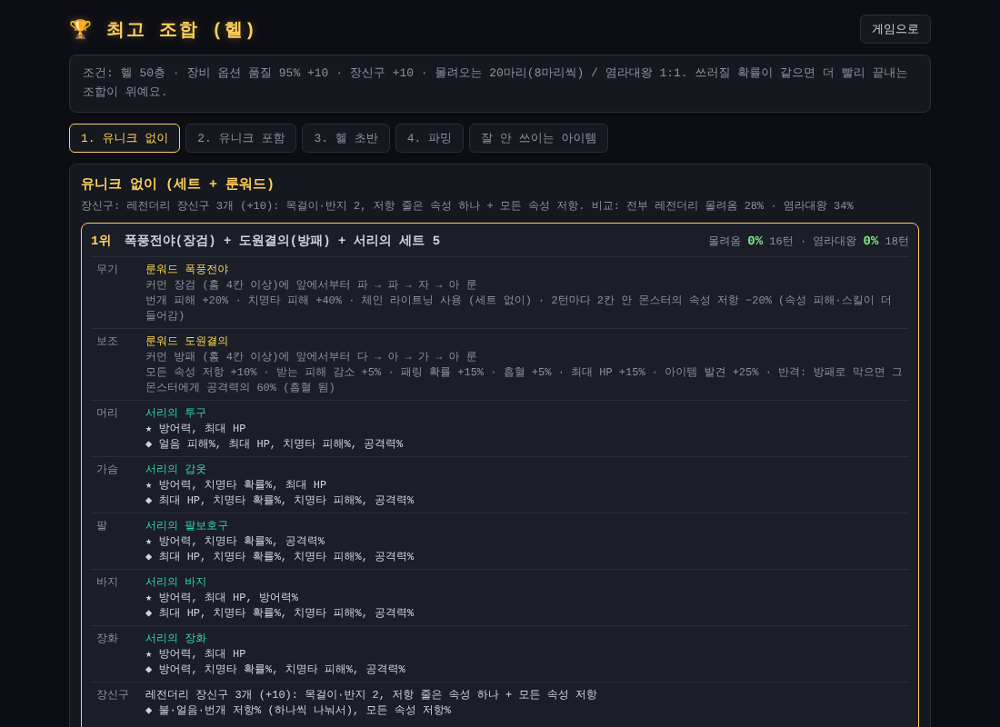
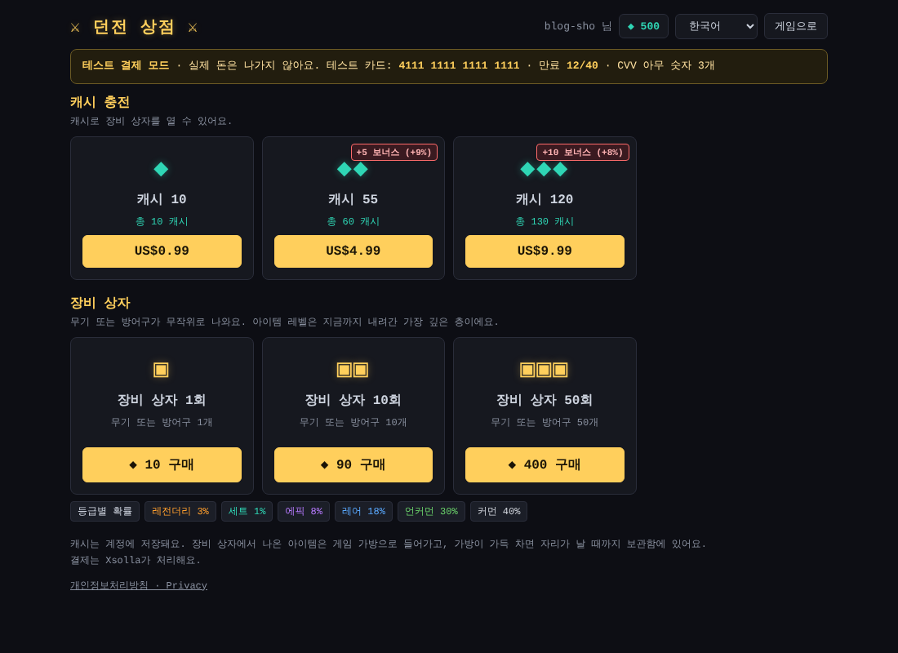

최고 조합 페이지, 파밍 룬워드, 그리고 첫 한정 판매
오늘은 정말 많은 걸 했어요. 장신구를 강화할 수 있게 바꾸고, 시뮬레이션으로 찾은 최고 조합을 따로 보는 페이지를 만들고, 아무도 안 쓰던 아이템들을 살려 냈어요. 저녁엔 결제 창을 손보고 첫 한정 판매 상품까지 열었어요.
장신구: %에서 수치로, 이제 강화도 돼요
어제 만든 장신구는 "공격력 +20%"처럼 고정 %라서 강화해도 의미가 없었어요. 그래서 주 능력치를 공격력·방어력·최대 HP 세 줄의 수치로 바꿨어요(규칙 r8). 이제 다른 장비처럼 강화하면 오르고, +10이면 2배가 돼요.
세기를 맞추는 과정이 재미있었어요.
- 처음엔 +0 장신구가 예전 25%와 같은 세기가 되도록 맞췄어요
- 그런데 +10까지 강화하면 2배가 되니 헬 50층이 모든 장비 품질에서 0%가 돼 버렸어요
- 그래서 +10일 때 예전 25%와 같게 다시 맞췄어요
시뮬레이션으로 보면 헬 50층에서 장신구 +0은 거의 버티지 못하고, +5면 절반쯤, +10이면 예전과 비슷한 20% 근처예요. 장신구 강화가 확실한 목표가 된 거죠. 예전에 얻은 % 장신구는 그대로 남아요.
밸런스를 빨리 확인할 수 있도록 개발용 테스트 기능도 조금 손봤어요.
최고 조합 페이지
시뮬레이션 결과가 쌓이자 추천 탭이 너무 길어졌어요. 그래서 게임 안에는 꼭 필요한 것만 두고, 자세한 결과는 새 창으로 여는 최고 조합 페이지로 옮겼어요.

- 유니크 없이 / 유니크 포함 조합을 5개씩, 1위는 부위별 아이템·룬 순서·추천 줄까지
- 어떤 주 능력치·추가 능력치 줄이 좋은지 ("줄 고르기")
- 잘 안 쓰이는 아이템 목록
- 나중에 헬 초반과 파밍 탭도 추가했어요
게임 추천 탭의 헬 쪽은 "가장 강한 유니크 순위"(1. 여우구슬 지팡이, 2. 사자의 낫, 3. 명부의 사슬…)로 줄였어요. 흥미로운 결론은, 유니크를 전부 모으기보다 강한 유니크 + 세트를 섞는 게 가장 빠르다는 거였어요.
안 쓰이던 아이템 살리기
최고 조합을 찾다 보니 "아무도 안 낄 아이템"이 잔뜩 보였어요. 이걸 하나씩 살리는 게 오늘의 큰 줄기였어요.
아이템 발견 %
안 쓰이는 룬워드·유니크를 파밍용으로 만들자는 아이디어가 나왔어요. 그래서 새 능력치 아이템 발견 %(최대 100%)를 만들었어요.
- 처치할 때마다 확률적으로 레어 이상 보너스 아이템
- 네임드의 유니크 드롭 확률도 올라감 (100%면 15% → 20%)
- 시뮬레이션상 발견 100%면 레전더리·세트가 약 2.3배 더 나와요
룬워드를 더 쉽게, 남는 홈은 사라지게
"홈 4개짜리 장검 커먼이 1.5만~3만 마리에 하나"라는 계산이 나왔어요. 너무 어렵죠. 그래서 홈이 룬보다 많아도 룬워드를 만들 수 있게 했어요. 룬을 다 넣어 완성하면 남는 홈은 없어지고, 넣기 전에 확인 창으로 알려 줘요.
장검·방패 룬워드는 파밍 무기로
장검 + 방패 룬워드 세 개는 느려서 헬 네임드에게 거의 다 쓰러졌어요. 그래서 역할을 바꿔 아이템 발견 +25%와 공격 스킬을 붙였어요.
- 선견지명 · 회전 베기: 2턴마다 주변 적 모두에게 공격력의 50%
- 카리스마 · 처치 폭발: 쓰러진 몬스터가 터지며 주변에 피해 (연쇄 폭발!)
- 도원결의 · 반격: 방패로 막으면 공격력의 60%로 되받아침
룬워드 4개만으로 발견 100%를 채울 수 있고, 몰려오는 몬스터 정리도 빨라서 시간당 레전더리·세트가 약 3배예요. 추천 탭에도 🔍 파밍 버튼이 생겼어요.
장검 ×2, 그리고 치유와의 이별
- 장검 기본 공격 피해 ×2: 장검 조합이 헬 50층에서도 쓸 만해졌어요
- 여의주 검: 주변에 다른 적이 없으면 체인 라이트닝이 같은 몬스터를 다시 쳐요
- 업경대: 방패로 막아도 피해의 30%를 되돌려요
- 쓰이는 곳이 없던 룬워드 치유는 삭제했어요
참고로 앞서 장검·방패 룬워드가 헬 50층에서 "8~20% 쓰러진다"고 적었던 건 장신구를 빼고 돌린 실수였어요. 다시 돌려 보니 모두 0%라서 바로 정정했어요. 시뮬레이션 조건을 꼼꼼히 확인하는 게 중요하다는 걸 또 배웠네요.
나이트메어·헬이 더 단단해졌어요
도감을 보다가 몬스터 방어력이 이상하게 낮은 걸 발견했어요. 알고 보니 나이트메어부터 방어력이 40 근처에서 멈춰 있었어요. 의도한 게 아니었죠.
- 몬스터 방어력: 이제 플레이어 공격력의 약 10% 수준까지 올라가요. 대신 HP·공격력을 살짝 낮춰 체감 난이도는 거의 그대로 맞췄어요
- 속성 저항 감소: 장비 저항 합에서 나이트메어 −40, 헬 −70을 빼요. 저항을 더 모아야 해서 파밍할 이유가 생겨요
결제 창은 새 창으로
카드 인증이나 PayPal처럼 다른 페이지로 넘어가는 결제 수단을 쓰면 상점 창이 통째로 넘어가 버리는 문제가 있었어요. 이제 결제는 새 창에서 열리고, 상점 창은 주문 상태를 지켜보다가 결제가 끝나면 캐시를 넣고 결제 창을 닫아 줘요. 테스트를 위해 상점 결제는 Xsolla 샌드박스(실제 돈이 나가지 않는 테스트 결제)로 바꿨어요.
첫 한정 판매: 고대 유니크 선택 상자
가장 얻기 힘든 아이템을 한 번만, 현금으로 파는 상품을 만들었어요.

- 고대 유니크 선택 상자: 계정당 1회, $4.99
- 사면 게임 우편함으로 상자가 오고, 열면 유니크 15종 중 하나를 골라 고대(모든 능력치 최대치)로 받아요
- 계정당 1회 제한은 Xsolla 카탈로그의 구매 제한으로 걸어서, 두 번째 주문은 Xsolla가 거절해요
- 랭킹에는 인정하되 💰 구매 아이템 표시가 붙어요
- 개인정보는 가린 값만 저장하고, 결제 계정 정보는 저장하지 않아요
실제 샌드박스에서 결제부터 우편함 도착까지 끝까지 확인했어요.
다음에는
남은 숙제는 바뀐 장검·저항·몬스터 방어력이 실제 플레이에서 어떤지 지켜보는 거예요. 던전 크롤러에서 강화한 장신구와 파밍 룬워드를 시험해 보세요!